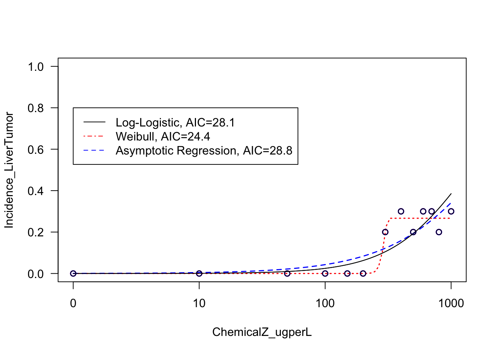

3.3 Regression Modeling and Visualization: Linear and Logistic Regressions
Regression modeling aims to find a relationship between a dependent variable (or outcome, response, y) and an independent variable (or predictor, explanatory variable, x). There are many forms of regression analysis, but here we will focus on two: linear regression and logistic regression.
In brief, linear regression is generally used when you have a continuous dependent variable and there is assumed to be some sort of linear relationship between the dependent and independent variables. Conversely, logistic regression is often used when the dependent variable is dichotomous (0 or 1).
Let’s first run through an example linear regression model.
3.3.1 Linear Regression
For this example, let’s evaluate the potential relationship between the subjects’ birthweight (BW) and BMI. Here, we will first visualize the data and a run simple correlation analysis to evaluate whether these data are generally correlated. Then, we will run a linear regression to evaluate the relationship between these variables in more detail.
Plotting the variables against one another using the basic ‘plot’ function to produce a scatterplot:

Running a basic collection analyses between these two variables using the ‘cor’ function:
## [1] 0.2485164
The provides a correlation coefficient (R) value of 0.25.
Let’s now use the ‘cor.test’ function to extract the correlation p-value:
## [1] 0.0003876464Checking to see that we get the same correlation coefficient (R) using this function:
## cor
## 0.2485164Together, it looks like there may be a relationship between BW and BMI, based on these correlation results, demonstrating a significant p-value of 0.0004.
To test this further, let’s run a linear regression analysis using the ‘lm’ function, using BMI (X) as the independent variable and BW as the dependent variable (Y):
##
## Call:
## lm(formula = BW ~ BMI, data = full.data)
##
## Residuals:
## Min 1Q Median 3Q Max
## -598.39 -116.72 8.11 136.54 490.11
##
## Coefficients:
## Estimate Std. Error t value Pr(>|t|)
## (Intercept) 3069.201 52.576 58.38 < 2e-16 ***
## BMI 7.208 1.997 3.61 0.000388 ***
## ---
## Signif. codes: 0 '***' 0.001 '**' 0.01 '*' 0.05 '.' 0.1 ' ' 1
##
## Residual standard error: 188 on 198 degrees of freedom
## Multiple R-squared: 0.06176, Adjusted R-squared: 0.05702
## F-statistic: 13.03 on 1 and 198 DF, p-value: 0.0003876We can see here that the relationship between BMI and BW is shown to be significant, with a p-value of 0.000411
We can also derive confidence intervals for the BMI estimate using:
## 2.5 % 97.5 %
## 3.270873 11.145740Notice that the r-squared (R^2) value in regression output is the squared value of the previously calculated correlation coefficient (R)
## [1] 0.2485164In epidemiological studies, the potential influence of confounders is considered by including important covariates within the final regression model. Here, let’s include the covariates of maternal age (MAge) and gestational age (GA) as an example for running a linear regression model with covariates:
##
## Call:
## lm(formula = BW ~ BMI + MAge + GA, data = full.data)
##
## Residuals:
## Min 1Q Median 3Q Max
## -454.04 -111.24 5.79 116.46 488.41
##
## Coefficients:
## Estimate Std. Error t value Pr(>|t|)
## (Intercept) 2247.995 117.946 19.060 < 2e-16 ***
## BMI 6.237 1.774 3.515 0.000547 ***
## MAge 4.269 1.887 2.263 0.024752 *
## GA 19.612 2.656 7.385 4.28e-12 ***
## ---
## Signif. codes: 0 '***' 0.001 '**' 0.01 '*' 0.05 '.' 0.1 ' ' 1
##
## Residual standard error: 165.5 on 196 degrees of freedom
## Multiple R-squared: 0.2805, Adjusted R-squared: 0.2695
## F-statistic: 25.47 on 3 and 196 DF, p-value: 5.884e-14Here, we can see that BMI is still significantly associated with BW, and the included covariates are also shown to be related to BW in this model.
Let’s further visualize these regression modeling results by adding a regression line to the original scatterplot:

Collectively, these results demonstrate a significantly relationship between BMI and BW, both when modeling with and without covariates.
3.3.2 Logistic Regression
To carry out a logistic regression, we need to evaluate one continuous variable (here, we select material education, using MEdu variable) and one dichotomous variable (here, we select smoking status, using the Smoker variable).
When considering these data, we may hypothesize that higher levels of education are negatively associated with smoking status. In other words, those with higher education are less likely to smoke. Because smoking status is a dichotomous variable, we will use logistic regression to look at this relationship.
Let’s first visualize these data using a boxplot for the dichotomous smoker dataset:

With this visualization, it’s difficult to tell whether or not there are significant differences in maternal education based on smoking status.
Let’s now run the statistical analysis, using logistic regression modeling:
# use GLM (generalized linear model) and specify the family as binomial
# this tells GLM to run a logistic regression
log.res = glm(Smoker ~ MEdu, family = "binomial", data=full.data)
summary(log.res) # viewing the results##
## Call:
## glm(formula = Smoker ~ MEdu, family = "binomial", data = full.data)
##
## Deviance Residuals:
## Min 1Q Median 3Q Max
## -0.8261 -0.7052 -0.7052 -0.7052 1.7398
##
## Coefficients:
## Estimate Std. Error z value Pr(>|z|)
## (Intercept) -0.7172 0.6031 -1.189 0.234
## MEdu -0.1826 0.2305 -0.792 0.428
##
## (Dispersion parameter for binomial family taken to be 1)
##
## Null deviance: 218.10 on 199 degrees of freedom
## Residual deviance: 217.49 on 198 degrees of freedom
## AIC: 221.49
##
## Number of Fisher Scoring iterations: 4Similar to the regression modeling analysis, we can also derive confidence intervals:
## Waiting for profiling to be done...## 2.5 % 97.5 %
## -0.6262616 0.2839524Collectively, these results show a non-significant p-value relating maternal education to smoking status. The confidence intervals also overlap across zero. Therefore, these data do not demonstrate a significant association between maternal education and smoking status.